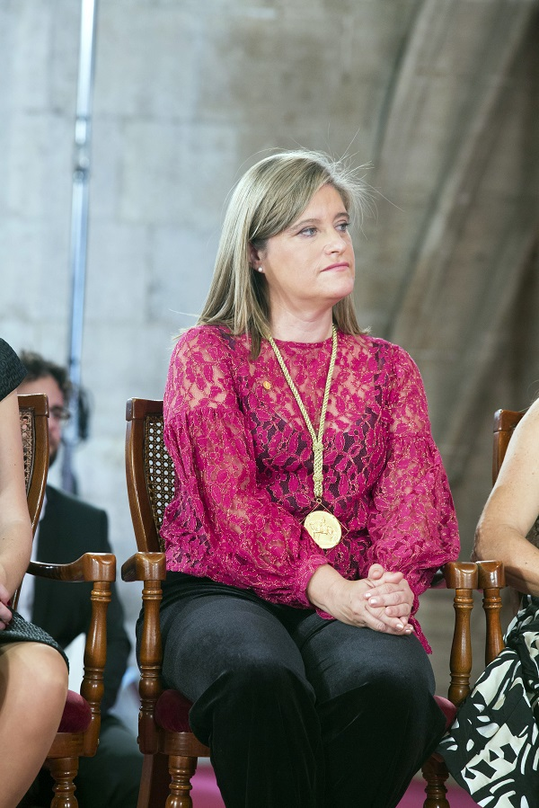
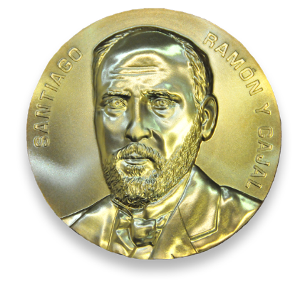

Sus premios y reconocimientos
 
Susana Marcos ha recibido gran cantidad de premios como: la
Medalha Adolph Lomb
en 2002, el Premio Rey Jaime I a las Nuevas Tecnologías en 2017 y 2021 o la
Medalla Ramon y Cajal
en 2019